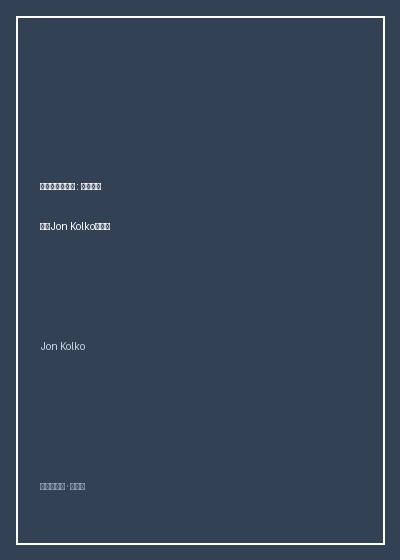

《交互设计沉思录》

总体观点
交互设计的本质不是画线框图、排布按钮或编写前端原型，而是‘塑造人类的行为与生活方式’。每一次人机对话与操作流程的设计，本质上都在悄然重构人与技术、人与社会以及人与自我之间的情感纽带与权力结构，设计是一门深刻的‘意义建构学’。
设计必须深植于激进的同理心（Empathy）。优秀的设计师不是高高在上的专家，而是谦卑的民族志观察者。设计灵感源于对真实人类脆弱性、焦虑与尊严的深刻洞察；唯有将‘人性的复杂与不完美’作为设计的约束条件，技术造物才不会蜕变为冰冷异化的技术枷锁。
直面设计的社会责任与‘棘手问题’（Wicked Problems）。在商业资本疯狂追求留存率、点击率与成瘾算法的今天，交互设计师必须警惕‘暗黑设计模式’（Dark Patterns），坚守职业良知，利用设计的系统性思辨力量去解决贫困、医疗、教育与社区分裂等真正崇高的时代挑战。
核心观点
-
1. 设计是对行为的隐蔽塑形
任何软件架构与交互反馈都在无形中奖励某种行为并惩罚另一种行为。设计从来不是中立的，它要么在鼓励深度的沉思与真挚的连接，要么在诱导浅薄的成瘾与暴戾的对立。
社交媒体将‘点赞’与‘下拉刷新’设计成老虎机式的间歇性可变奖励机制，在不知不觉中将数亿用户的注意力塑造为巴甫洛夫式的多巴胺受体。 -
2. 同理心超越用户画像的纸面数据
将用户降维为几句‘25岁未婚女白领喜欢瑜伽’的虚假用户画像（Persona）是设计的偷懒。真正的同理心要求设计师走进贫民窟、重症监护室与工厂车间，亲身感受使用者手心的汗水与颤抖。
为重度慢性病老人设计用药App时，年轻设计师戴上模糊眼镜与僵硬关节手套亲身体验，才发现原以为酷炫的细字重与低对比度灰色界面对老人而言是无法逾越的天堑。 -
3. 情境感知的智能交互温度
优秀的交互设计懂得保持克制与分寸感。系统应当根据物理环境、情绪氛围与任务紧急程度动态调整交互强度，在平静中提供支持，而非像烦人的推销员一样无时无刻不在刷存在感。
车载系统在检测到驾驶员正处在暴雨天气且车速高达100码变道时，自动拦截所有非紧急的社交聊天弹窗与音乐推荐通知，全力守护行车安全。 -
4. 拥抱设计中的‘棘手问题’
棘手问题没有明确的边界与标准答案，解决一个问题往往会引发新的次生问题。设计师不能依赖线性的工程思维，而必须依靠迭代假设、故事板与推测性设计（Speculative Design）在灰度中前行。
针对发展中国家偏远山区女孩失学设计的数字化教育平板方案，必须同时解决无电网覆盖太阳能充电、家长重男轻女阻挠与本地部族语言转译的多维棘手交织。 -
5. 抵抗暗黑设计模式的职业道德
利用认知心理学盲区故意诱导用户点击订阅续费、隐藏取消账号按钮的‘暗黑模式’虽然短期拉高商业KPI，却在系统性破坏人际信任。设计师必须有勇气向不道德的产品需求说不。
电商结账页面默认勾选昂贵的航空延误险且把勾选框隐藏在折叠字体里，这种卑劣的界面欺骗正在遭遇全球消费者保护机构的严厉立法惩戒。
全书思维导图 · 知识脉络树
全书结构
-
第一章 意义的创造：何谓交互设计
拨开技术迷雾，界定交互设计的思想谱系，论证设计如何作为一门人文学科在人、物与文化网络之间编织意义。
对比一台老式机械打字机清脆的机件撞击声与现代平板电脑触摸屏敲击时的振动马达模拟，探讨技术触感对人类心灵的安全感重构。 -
第二章 人性本色：同理心与用户研究
深入定性研究现场，讲解民族志田野观察、影子跟随法与深度访谈，剖析设计师如何跳出自身精英中产视角的自大盲区。
记录设计师团队在非洲卢旺达无电力乡村跟随村民挑水走五公里山路，领悟到净水设备必须轻量化且能与传统头顶背篓卡扣兼容的鲜活案例。 -
第三章 行为塑造：形式、功能与心智模型
探讨示能（Affordance）、映射与反馈如何协同作用，帮助用户在脑海中建立与物理系统严密吻合的心理模型。
剖析电磁炉旋钮如果采用线性触摸滑动条为何频频导致汤汁溢出，论证物理阶梯阻尼旋钮在急需关火时给予的绝对确定性反馈。 -
第四章 复杂世界的设计思辨：棘手问题
引入霍斯特·里特尔的‘棘手问题’理论，讲解设计综合（Design Synthesis）如何将碎片化的混沌洞察提炼为优雅的系统解构方案。
运用亲和图（Affinity Diagramming）与概念地图，在一面贴满上千张便签纸的白墙前推演全美退伍军人自杀干预服务网络的重塑流程。 -
第五章 设计的良知：职业责任与未来愿景
全书哲学结语，向全球年轻一代设计师发出庄严呼吁：用设计的力量抵抗冷漠与消费主义异化，点亮关照弱势群体的善意之光。
回顾维克多·帕帕奈克在《为真实世界而设计》中的警世格言，号召设计师将才华奉献给真正需要帮助的90%底层人类。